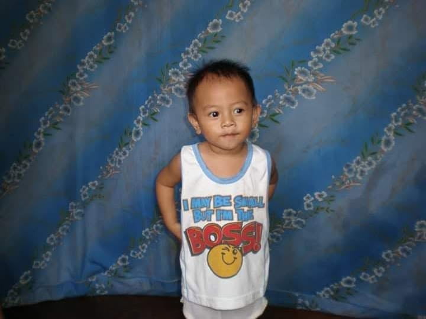

A loving, kind-hearted, family-oriented and thoughtful person who believes that even the smallest acts of kindness can make a meaningful difference in someone’s life. I value genuine connections, personal growth, and spreading positivity, and I strive to be someone who makes others feel appreciated, understood, and comfortable being themselves.
I'm Kiefer, studying Information Technology at University of Cebu - Main Campus.
I’m a naturally calm, kind-hearted, and curious person who finds happiness in nature, peaceful places, and the little things that make life meaningful. People may see me as someone who enjoys my own company, but beneath that quiet nature is a creative mind that loves exploring new experiences, learning new things, and discovering more about myself. I value kindness, authenticity, personal growth, and the freedom to be myself while appreciating the beauty of the world around me.
““Grow at your own pace, stay true to who you are, and find beauty in the little things.”
I believe that life isn't a race, and everyone has their own journey. Just as nature grows quietly in its own time, I believe we can become better versions of ourselves through patience, curiosity, and the courage to explore the world in our own way.”
I believe that growth begins with curiosity, creativity flourishes in quiet moments, and every new experience is an opportunity to discover something meaningful about the world and myself.
A Little Piece of My Story
Every story has a beginning, and this is a little glimpse of mine.
A little glimpse of where my story began. I may have grown older, but I still carry the same curiosity to explore, the appreciation for life's little things, and the desire to keep growing into a better version of myself.

Add your photo at assets/images/childhood-photo.jpg
A glimpse into my world
🎤 🎧
Singing and Listening to Music
Singing is one of my favorite ways to express myself and connect with my emotions. Whether I'm feeling happy, thoughtful, or simply enjoying a quiet moment, music gives me comfort and a little space to be myself.
🎮
Playing Video Games
I enjoy playing video games, especially first-person shooter games that challenge my focus, strategy, and quick decision-making. Gaming gives me a fun way to unwind, challenge myself, and enjoy some personal time.
🍳
Cooking
I enjoy cooking because it allows me to explore new flavors, experiment with ingredients, and learn through experience. For me, cooking is more than preparing food; it's a simple way to be creative and turn ordinary moments into something enjoyable.
🌿
Exploring Nature
I feel drawn to peaceful places, greenery, and the calming beauty of nature. Spending time in quiet surroundings helps me recharge, clear my mind, appreciate the present, and find inspiration in the little things around me. I find peace and inspiration in spending time outdoors, especially during nature walks. It helps me clear my mind, appreciate the beauty of the natural world, and recharge my energy.
Skills and things I'm learning
Technical
HTML
CSS
JavaScript
Flutter
React
React Native
PC Enthusiast
Personal
Problem-solving
Creative thinking
Communication
Currently learning: I’m currently exploring the world of app development, Amazon Web Services (AWS), and AI automation, discovering how they work, how different systems connect, and how they can be used to solve real-world problems. I’m also working on expanding my programming skills by learning new languages while improving my decision-making, problem-solving, creative thinking, and communication skills. My goal is to keep learning, turn my curiosity into practical skills, and become someone who can transform ideas into meaningful and useful solutions.
Little things that make my day
Composing Songs
Thanks for spending a little time in my corner of the internet.